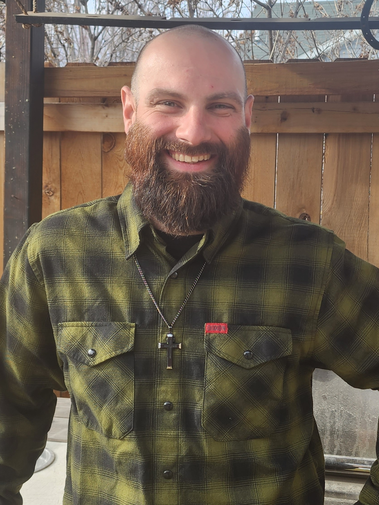

I strive for quality in all aspects of my life. Whether in business, or at home, I put my best effort into producing a product or experience to be enjoyed and remembered for years to come.
-Trevor Ray Corpron
Education
- Glacier High School Class of 2011
- University of Arizona Coding Bootcamp 2025
Biography
Trevor Corpron was born September 22nd 1992 in Yuma, Arizona to his loving parents Tony and Tracey Corpron. Trevor has three siblings: an older brother, Tyler, a younger sister, Tiana, and a younger brother, Tristan. Now settled in beautiful Kalispell, Montana, he spends most of his spare time creating lasting memories with his beloved wife Cheyenne, and two step sons, Daniel and William. Expecting his first biological child in May, he decided it was time to delve into a new career he could work from home, so as to spend as much time as possible with his newborn child when they finally enter this world.
Having been in construction for 12 years, Trevor developed a strong work ethic as well as excellent problem solving skills. Every day provides new and unique challenges to overcome, be it mental or physical. He hopes to one day utilize these skills to build a small real estate portfolio in the years to come.
Goals
Personal Goals
- Devote More Time To Family
- Complete University of Arizona's Coding Bootcamp
- Take A Trip To Silverwood This Summer With My Family
Professional Goals
- Maintain A Minimum Of 40 Hours A Week Of Work During School
- Utilize Career Coaches During Coding Bootcamp
- Procure A Great Job With A Great Company Upon Graduation
Financial Goals
- Build A Savings Account Of $10,00000 Over Next 2 Years (Minimum)
- Purchase 1-3 Acres Of Land Within 3 Years
- Begin Building Forever Home Within The Next 5 Years
Professional Experience
Cinecon Construction
McDonald's
- June 2010 - September 2013
Rothermel's Landscaping
TRC Construction LLC
Merideth Construction
- March 2016 - December 2016
- March 2018 - June 2018
Hard Core Concrete
- June 2017 - August 2017
- June 2018 - April 2023
Synergy Modular
Nelson Construction
- October 2023 - December 2023
Onyx Construction Services
- January 2024 - Present (February 2025)
Skills
- Communication
- Team Work
- Critical Thinking
- Problem Solving
- Geometry
- Algebra
- Finish Carpentry
- Rough Carpentry
- Concrete Foundations
- Concrete Flatwork
- Decorative Concrete
- Landscaping
- Insulation
- Drywall Installation
- Cabinet Installation
- Concete Countertops
- Marble/Granite Countertops
- Door Installation
- Window Installation
- Siding Installation
- Roofing Installation
- Flooring Installation
- Excavation
- New Construction
- Remodel